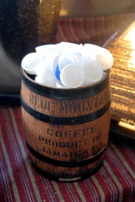
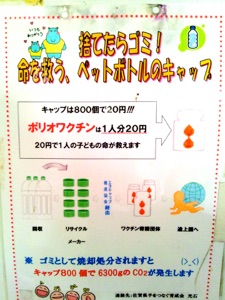

はじめよう！

気軽に出来る社会貢献！

ICHIZの事務所では、ペットボトルのキャップ集めをしています。
途上国ではポリオワクチンの予防接種ができずに命を落とす子供たちが沢山いるそうです。ポリオワクチンは一人分20円！ペットボトルのキャップを800個集めると一人の子供の命が救えるとのこと。
仮に、この800個のキャップをゴミとして焼却処分すると6300グラムのCO2が発生する。
どうせなら、誰かの役に立ちたいですよね！
ICHIZのヘルパーをご利用いただいているお客様の中にも、このキャプ集めをされている方がいらっしゃって、その方を見習ってこの活動を始めて現在でも継続しております。
